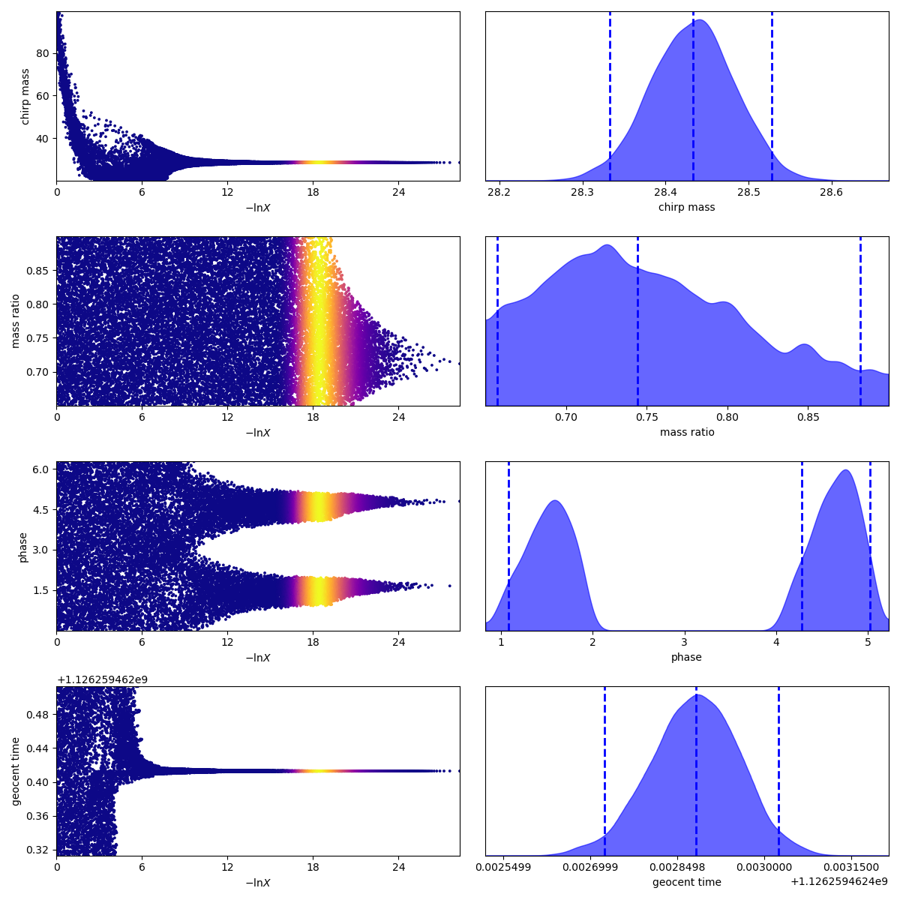

Using bilby with dynesty to estimate the properties of the first ever detected gravitational wave signal
Einstein's theory of General Relativity, 1916, predicted that space-time can act as a medium for "gravitational waves", which are ripples caused by extremely violent cosmic events such as black holes or neutron stars colliding. Einstein predicted that these waves travel at the speed of light, and could carry information about the event that caused them, and perhaps even reveal the "true" nature of gravity. He also predicted that the waves would be so small, that their presence would never be detected. However, almost 100 years later in 2015, LIGO detected the first gravitational wave signal "GW150914" using a 4km long interferometer, the arms of which only stretched by a thousandth the width of a proton.
The event that caused the gravitational waves was a merger of two massive black holes. In this example, I'll use the gravitational wave analysis package "bilby" along with the sampler "dynesty" to find the mass of the two black holes that caused GW150914.
Useful imports
# numpy
import numpy as np
# pandas
import pandas as pd
# plotting
import matplotlib.pyplot as plt
# sampler
import bilby
from bilby.core.prior import Uniform
# misc
from gwpy.timeseries import TimeSeries
Viewing the data
Bilby has in-built features that allow us to view the data that we'll be using. To do this, we have to set up interferometer objects that contain the data we'll be using. The data in question is made up of a strain dataset which contains the information of the waveform, and a Power Spectral Density (PSD) dataset which approximates the noise.
We start by defining a directory for bilby to save results, and defining the source we want to analyse, and creating some empty interferometer objects to store the data:
logger = bilby.core.utils.logger
outdir = "outdir"
# gravitational wave source
label = "GW150914"
H1 = bilby.gw.detector.get_empty_interferometer("H1")
L1 = bilby.gw.detector.get_empty_interferometer("L1")
To obtain the data, a time range around the event has to be defined and passed to "gwpy", which will download the data for us from here.
event_start_time = 1126259462.4 # event GPS time at which first GW discovered
post_event = 2 # time after event
pre_event = 2 # time before event
duration = pre_event + post_event # total time range containing event
analysis_begin = event_start_time - pre_event # GPS time at which to start analysis
Using these time settings, we can fetch the data we want to analyse. Once the data is downloaded, we can use in-built plot functions to visualise what our data will look like. The two plots below show the strain data for Hanford and Livingston detectors respectively.
H1_data = TimeSeries.fetch_open_data("H1", analysis_begin,
analysis_begin + duration,
sample_rate=4096, cache=True)
L1_data = TimeSeries.fetch_open_data("L1", analysis_begin,
analysis_begin + duration,
sample_rate=4096, cache=True)
H1_data.plot()
plt.savefig("H1_data")
L1_data.plot()
plt.savefig("L1_data")

We can also check out the PSD data that we'll be using to estimate noise in the data. Again using gwpy, the data can be obtained as follows:
# duration typically multiplied by 32 for psd
psd_duration = duration * 32
psd_begin = analysis_start - psd_duration
# fetch data for psd
H1psd = TimeSeries.fetch_open_data(
"H1", psd_begin, psd_begin + psd_duration,
sample_rate=4096, cache=True)
L1psd = TimeSeries.fetch_open_data(
"L1", psd_begin, psd_begin + psd_duration,
sample_rate=4096, cache=True)
# set interferometers with psd data
psd_alpha = 2 * H1.strain_data.roll_off / duration
H1psd_data = H1psd.psd(fftlength=duration, overlap=0, window=("tukey", psd_alpha), method="median")
L1psd_data = L1psd.psd(fftlength=duration, overlap=0, window=("tukey", psd_alpha), method="median")
H1.power_spectral_density = bilby.gw.detector.PowerSpectralDensity(
frequency_array=H1psd_data.frequencies.value, psd_array=H1psd_data.value)
L1.power_spectral_density = bilby.gw.detector.PowerSpectralDensity(
frequency_array=L1psd_data.frequencies.value, psd_array=L1psd_data.value)
Before plotting the PSD, its useful to set an upper frequency limit as higher frequencies aren't so useful. After limiting the frequency, we can plot the PSD data:
H1.maximum_frequency = 1024
L1.maximum_frequency = 1024
plt.figure()
idxs = H1.strain_data.frequency_mask
a,b = list(H1.strain_data.frequency_array[idxs]),list(np.abs(H1.strain_data.frequency_domain_strain[idxs]))
c,d = list(H1.power_spectral_density.frequency_array[idxs]),list(H1.power_spectral_density.asd_array[idxs])
plt.plot(a,b)
plt.plot(c,d)
plt.yscale('log')
plt.xscale('log')
plt.xlabel("Frequency [Hz]")
plt.ylabel("Strain [strain/$\sqrt{Hz}$]")
plt.savefig("strainvfreq")
Setting the priors
The model describing the black hole merger depends on 15 parameters. Running a sampler with this many parameters can take half a day to run. To save some time, I'll fix all but 4 parameters: the chirp mass, the mass ratio, the phase, and the geocent time.
The chirp mass and mass ratio are two parameters which depend only on the mass of the two black holes that caused the gravitational waves. When these two parameters are derived, we can use them to calculate the masses of the black holes. Since we don't know much about the system parameters that we're allowing to vary, uniform priors are most appropriate:
prior = bilby.core.prior.PriorDict()
# uniform priors for variable parameters
prior['chirp_mass'] = Uniform(name='chirp_mass', minimum=10.0,maximum=100.0)
prior['mass_ratio'] = Uniform(name='mass_ratio', minimum=0.5, maximum=1)
prior['phase'] = Uniform(name="phase", minimum=0, maximum=2*np.pi)
prior['geocent_time'] = Uniform(name="geocent_time", minimum=event_start_time-0.1,
maximum=event_start_time+0.1)
# fixed values for all other parameters
prior['a_1'] = 0.0
prior['a_2'] = 0.0
prior['tilt_1'] = 0.0
prior['tilt_2'] = 0.0
prior['phi_12'] = 0.0
prior['phi_jl'] = 0.0
prior['dec'] = -1.2232
prior['ra'] = 2.19432
prior['theta_jn'] = 1.89694
prior['psi'] = 0.532268
prior['luminosity_distance'] = 412.066
Setting the likelihood
Bilby comes with in-built likelihood functions. To use them, first a waveform has to be generated using the properties of the data, like duration and sampling frequency. We also need to combine the interferometers into a list, so that both will be used at once when it comes to sampling.
interferometers = [H1, L1]
waveform_arguments = dict(waveform_approximant='IMRPhenomPv2',
reference_frequency=50., minimum_frequency=20.)
# set sampling frequency of data
sampling_frequency = 2048.
# generate waveforms
waveform_generator = bilby.gw.WaveformGenerator(
duration=duration, sampling_frequency=sampling_frequency,
frequency_domain_source_model=bilby.gw.source.lal_binary_black_hole,
parameter_conversion=bilby.gw.conversion.convert_to_lal_binary_black_hole_parameters,
waveform_arguments=waveform_arguments)
likelihood = bilby.gw.GravitationalWaveTransient(
interferometers=interferometers, waveform_generator=waveform_generator)
Sampling the data
Now that the likelihood and prior functions are set up, the sampler can now be implemented to derive some of the properties of the binary black hole system. This process is intensive, and takes a long time (1 hour 15 minutes) to run on my machine.
The sampler I chose to use is "dynesty", which uses nested sampling to estimate the model parameters. For a more in-depth work through of dynesty, you can read through an example of gamma-ray spectroscopy using dynesty on this site.
Using bilby, we can run the sampler. First, we have to set the number of live points, and the stopping criterion as hyperparameters. For neatness, I've removed the log that bilby outputs whilst running. Instead, I'll just show the summary that is outputted by bilby once the sampler has finished iterating. This summary contains information on the log evidence, and the Bayes factor of the model.
nlive = 1000 # live points
stop = 0.1 # stopping criterion
method = "unif" # method of sampling
sampler = "dynesty" # sampler to use
result = bilby.run_sampler(
likelihood, prior, sampler=sampler, outdir=outdir, label=label,
conversion_function=bilby.gw.conversion.generate_all_bbh_parameters,
sample=method, nlive=nlive, dlogz=stop)
16:23 bilby INFO : Sampling time: 1:12:43.878674
16:23 bilby INFO : Summary of results:
nsamples: 23105
ln_noise_evidence: -8112.144
ln_evidence: -8729.851 +/- 0.188
ln_bayes_factor: -617.707 +/- 0.188
Plotting the posterior
Eventually, the sampling will be complete. Bilby creates a few useful plots of the posteriors, along with saving samples of the posteriors for us to further analyse. Lets start by plotting a corner plot, which nicely shows the posteriors for all the parameters, as well as contour plots showing how one parameter varies with any other.
result.plot_corner()
We can also view the traces for each parameter, which bilby will save by default under the directory labeled as "outdir":

Estimating the black hole masses
To estimate the black hole masses, we need to obtain the samples describing the posteriors of the data. This can be done quite easily as bilby returns the posterior samples. Alternatively, bilby also saves posterior samples to a text file, which can be loaded using pandas. I'll use the latter method, so I don't have to re-run the sampler.
# load posterior samples into a pandas dataframe directly
# posts = result.posterior
# alternatively, load posts using samples saved by bilby using pandas
posts = pd.read_csv("GWSampleDemo_samples.dat", sep = " ")
chirp_mass_samps = list(posts["chirp_mass"])
mass_ratio_samps = list(posts["mass_ratio"])
geocent_time_samps = list(posts["geocent_time"])
Next, we can take the posterior samples and find their mean values:
chirp_mass, chirp_mass_err = np.mean(chirp_mass_samps), np.std(chirp_mass_samps)
mass_ratio, mass_ratio_err = np.mean(mass_ratio_samps), np.std(mass_ratio_samps)
geocent_time, geocent_time_err = np.mean(geocent_time_samps), np.std(geocent_time_samps)
print("Parameters describing the GW150914 signal: \n \n" +
" chirp mass = {} \u00B1 {} \n".format(chirp_mass, chirp_mass_err) +
" mass ratio = {} \u00B1 {} \n \n".format(mass_ratio, mass_ratio_err) +
"geocent time = {} \u00B1 {} \n".format(geocent_time, geocent_time_err) +
"True geocent time = 1126259462.4")
Parameters describing the GW150914 signal:
chirp mass = 28.432363440275488 ± 0.049549938503053295
mass ratio = 0.7520294836733314 ± 0.06062816795824152
geocent time = 1126259462.4128802 ± 7.509222877728134e-05
True geocent time = 1126259462.4
The time of the event lines up quite nicely. Next, we can attempt to calculate the mass of each black hole, which is fairly straight forward now that we know the chirp mass and mass ratio. The following function will return the masses of the black holes, given the chirp mass, mass ratio, and their errors.
def bbhMass(chirp,chirperr,ratio,ratioerr):
"""
Function that calculates black hole masses with errors
m1,m2 = larger black hole mass, smaller black hole mass
chirp = (m1*m2)**(3/5) / (m1+m2)**(1/5)
ratio = m2/m1
"""
# use chirp mass and ratio to find primary black hole mass
m1 = chirp / (ratio**(3/5) * (1/(1+ratio))**(1/5))
m1err = (chirp + chirperr) / ((ratio-ratioerr)**(3/5) *
(1/(1+(ratio+ratioerr))**(1/5))) - m1
# use primary black hole mass and ratio to find secondary black hole mass
m2 = m1*ratio
m2err = (m1+m1err)*(ratio+ratioerr) - m2
return (m1,m1err),(m2,m2err)
(m1,m1err), (m2,m2err) = bbhMass(chirp_mass,chirp_mass_err,
mass_ratio,mass_ratio_err)
print("Black hole masses from sampling (in solar masses): \n \n" +
" largest black hole = {} \u00B1 {} \n".format(m1, m1err) +
" smallest black hole = {} \u00B1 {} \n \n".format(m2, m2err) +
"Accepted black hole masses (in solar masses): \n \n" +
" largest black hole = {}\n".format(36.2) +
" smallest black hole = {}".format(29.1))
Black hole masses from sampling (in solar masses):
largest black hole = 37.73812541182669 ± 2.2926680096744576
smallest black hole = 28.38018296825545 ± 4.151147606610291
Accepted black hole masses (in solar masses):
largest black hole = 36.2
smallest black hole = 29.1
Our estimates here are within one standard deviation error of the accepted black hole masses. This is a good result given that we only used 4 of 15 parameters. However allowing the other 11 parameters to vary would certainly reduce the error on our estimate, at the cost of 15 hours processing time.